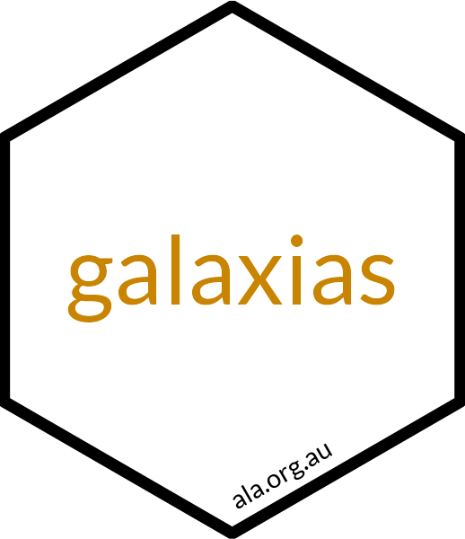

Standardise an Occurrence dataset
Dax Kellie & Martin Westgate
2025-06-06
Source:vignettes/occurrences-example.Rmd
occurrences-example.RmdIn Living Atlases like the Atlas of Living Australia (ALA), the default type of data is occurrence data, where a record refers to the presence/absence of an organism or taxon in a particular place at a specific time. This is a relatively simple data structure, where it is assumed that each observation or record is independent of each other. This simplicity also allows occurrence-based data to be easily aggregated.
Here, we’ll go through the steps to standardise and build an occurrence dataset using galaxias.
The dataset
The data we’ll use are of bird observations from 4 different sites.
As these are occurrence data, this dataset contains evidence of
the presence of certain bird species (species) at
particular locations (lat, lon) at specific
times (date). It also contains additional information about
the landscape type, and sex and age class of birds.
library(galaxias)
library(dplyr)
library(readr)
obs <- read_csv("dummy-dataset-sb.csv",
show_col_types = FALSE) |>
janitor::clean_names()
obs |>
gt::gt() |>
gt::opt_interactive(page_size_default = 5)Standardise to Darwin Core
We can use suggest_workflow() to determine what we need
to do to standardise this dataset.
obs |>
suggest_workflow()
#>
#> ── Matching Darwin Core terms ──────────────────────────────────────────────────
#> Matched 1 of 12 column names to DwC terms:
#> ✔ Matched: sex
#> ✖ Unmatched: age_class, comments, date, landscape, lat, lon, molecular_sex,
#> sample_id, site, species, species_code
#>
#> ── Minimum required Darwin Core terms ──────────────────────────────────────────
#>
#> Type Matched term(s) Missing term(s)
#> ✖ Identifier (at least one) - occurrenceID, catalogNumber, recordNumber
#> ✖ Record type - basisOfRecord
#> ✖ Scientific name - scientificName
#> ✖ Location - decimalLatitude, decimalLongitude, geodeticDatum, coordinateUncertaintyInMeters
#> ✖ Date/Time - eventDate
#>
#> ── Suggested workflow ──────────────────────────────────────────────────────────
#>
#> To make your data Darwin Core compliant, use the following workflow:
#>
#> df |>
#> set_occurrences() |>
#> set_datetime() |>
#> set_coordinates() |>
#> set_scientific_name()
#>
#> ── Additional functions
#> Based on your matched terms, you can also add to your pipe:
#> • `set_individual_traits()`
#> ℹ See all `set_` functions at
#> http://corella.ala.org.au/reference/index.html#add-rename-or-edit-columns-to-match-darwin-core-termsCalling suggest_workflow() tells us that one column in
the dataset matches Darwin Core terms (sex), and we are
missing all the minimum required Darwin Core terms. We’re also given a
suggested workflow consisting of a series of piped set_
functions for renaming, modifying, or adding missing columns
(set_ functions are specialised wrappers around
dplyr::mutate(), with additional functionality to support
using Darwin Core Standard).
Let’s start by renaming existing columns to align with Darwin Core
terms. set_ functions will automatically check to make sure
each column is correctly formatted.
obs_dwc <- obs |>
set_scientific_name(scientificName = species) |>
set_coordinates(decimalLatitude = lat,
decimalLongitude = lon) |>
set_datetime(eventDate = lubridate::ymd(date)) # specify year-month-day format
#> ⠙ Checking 1 column: scientificName
#> ✔ Checking 1 column: scientificName [319ms]
#>
#> ⠙ Checking 2 columns: decimalLatitude and decimalLongitude
#> ✔ Checking 2 columns: decimalLatitude and decimalLongitude [618ms]
#>
#> ⠙ Checking 1 column: eventDate
#> ✔ Checking 1 column: eventDate [311ms]
#> One thing that is still missing are the required taxonomic terms
kingdom and family (noting that you could add
other taxonomic terms as well if you wish). These aren’t present in our
dataset, so we’ll have to add them. This is a fairly trivial exercise
for most biologists, and we’ll add them in text here; but it would be
possible to look this up with galah::search_taxa() as
well.
obs_dwc <- obs_dwc |>
set_taxonomy(kingdom = "Animalia",
phylum = "Chordata",
class = "Aves",
family = case_when(stringr::str_detect(scientificName, "^Acanthiza") ~ "Acanthizidae",
stringr::str_detect(scientificName, "^Artamus") ~ "Artamidae",
stringr::str_detect(scientificName, "^Climacteris") ~ "Climacteridae",
stringr::str_detect(scientificName, "^Malurus") ~ "Maluridae",
stringr::str_detect(scientificName, "^Ptilotula|^Melithreptus") ~ "Meliphagidae",
stringr::str_detect(scientificName, "^Pardalotus") ~ "Pardalotidae"))
#> ⠙ Checking 4 columns: class, family, kingdom, and phylum
#> ✔ Checking 4 columns: class, family, kingdom, and phylum [1.2s]
#> Calling suggest_workflow() again accounts for our
progress and shows us what still needs to be done. Here, we can see that
we’re still missing a couple of minimum required terms.
obs_dwc |>
suggest_workflow()
#>
#> ── Matching Darwin Core terms ──────────────────────────────────────────────────
#> Matched 8 of 15 column names to DwC terms:
#> ✔ Matched: class, decimalLatitude, decimalLongitude, eventDate, family,
#> kingdom, phylum, sex
#> ✖ Unmatched: age_class, comments, landscape, molecular_sex, sample_id, site,
#> species_code
#>
#> ── Minimum required Darwin Core terms ──────────────────────────────────────────
#>
#> Type Matched term(s) Missing term(s)
#> ✔ Date/Time eventDate -
#> ✖ Identifier (at least one) - occurrenceID, catalogNumber, recordNumber
#> ✖ Record type - basisOfRecord
#> ✖ Scientific name - scientificName
#> ✖ Location decimalLatitude decimalLongitude geodeticDatum coordinateUncertaintyInMeters
#>
#> ── Suggested workflow ──────────────────────────────────────────────────────────
#>
#> To make your data Darwin Core compliant, use the following workflow:
#>
#> df |>
#> set_occurrences() |>
#> set_coordinates() |>
#> set_scientific_name()
#>
#> ── Additional functions
#> Based on your matched terms, you can also add to your pipe:
#> • `set_individual_traits()` `set_taxonomy()`
#> ℹ See all `set_` functions at
#> http://corella.ala.org.au/reference/index.html#add-rename-or-edit-columns-to-match-darwin-core-termsHere’s a rundown of the columns we need to add:
-
occurrenceID: Unique identifier for each record, which ensures that we can identify specific records for future updates or corrections. We can usecomposite_id(),sequential_id(), orrandom_id()to add a unique ID to each row. -
basisOfRecord: The type of record (e.g. human observation, specimen from a museum collection, machine observation). See a list of acceptable values withcorella::basisOfRecord_values(). -
geodeticDatum: The geographic coordinate reference system (CRS), which is a framework for representing spatial data (for example, the CRS of Google Maps is “WGS84”). -
coordinateUncertaintyInMeters: The area of uncertainty around your observation, which you may be able to infer based on your data collection method.
As suggested, let’s add these columns using
set_occurrences() and set_coordinates(). We
can also add the suggested function set_individual_traits()
which will automatically identify the matched column name
sex and check the column’s format.
obs_dwc <- obs_dwc |>
set_occurrences(
occurrenceID = composite_id(sequential_id(), site, landscape),
basisOfRecord = "humanObservation"
) |>
set_coordinates(
geodeticDatum = "WGS84",
coordinateUncertaintyInMeters = 30
# coordinateUncertaintyInMeters = with_uncertainty(method = "phone")
) |>
set_individual_traits()
#> ⠙ Checking 2 columns: occurrenceID and basisOfRecord
#> ✔ Checking 2 columns: occurrenceID and basisOfRecord [622ms]
#>
#> ⠙ Checking 4 columns: decimalLatitude, decimalLongitude, coordinateUncertaintyI…
#> ✔ Checking 4 columns: decimalLatitude, decimalLongitude, coordinateUncertaintyI…
#>
#> ⠙ Checking 1 column: sex
#> ⠹ Checking 1 column: sex
#> ✔ Checking 1 column: sex [317ms]
#> Running suggest_workflow() once more confirms that our
dataset is ready to be used in a Darwin Core Archive!
obs_dwc |>
suggest_workflow()
#>
#> ── Matching Darwin Core terms ──────────────────────────────────────────────────
#> Matched 12 of 19 column names to DwC terms:
#> ✔ Matched: basisOfRecord, class, coordinateUncertaintyInMeters,
#> decimalLatitude, decimalLongitude, eventDate, family, geodeticDatum, kingdom,
#> occurrenceID, phylum, sex
#> ✖ Unmatched: age_class, comments, landscape, molecular_sex, sample_id, site,
#> species_code
#>
#> ── Minimum required Darwin Core terms ──────────────────────────────────────────
#>
#> Type Matched term(s) Missing term(s)
#> ✔ Identifier (at least one) occurrenceID -
#> ✔ Record type basisOfRecord -
#> ✔ Location decimalLatitude, decimalLongitude, geodeticDatum, coordinateUncertaintyInMeters -
#> ✔ Date/Time eventDate -
#> ✖ Scientific name - scientificName
#>
#> ── Suggested workflow ──────────────────────────────────────────────────────────
#>
#> To make your data Darwin Core compliant, use the following workflow:
#>
#> df |>
#> set_scientific_name()
#>
#> ── Additional functions
#> Based on your matched terms, you can also add to your pipe:
#> • `set_individual_traits()` `set_taxonomy()`
#> ℹ See all `set_` functions at
#> http://corella.ala.org.au/reference/index.html#add-rename-or-edit-columns-to-match-darwin-core-termsTo submit our dataset, we’ll select only the columns that match Darwin Core terms …
obs_dwc <- obs_dwc |>
select(any_of(occurrence_terms())) # select any matching terms
obs_dwc |>
gt::gt() |>
gt::opt_interactive(page_size_default = 5)… and save this as a file named occurrences.csv in a
folder named data-publish. It’s important to follow this
naming convention because galaxias automatically looks for particular
directories in some steps.
# Save in ./data-publish
use_data_occurrences(obs_dwc)All done! See the Quick start guide for instructions on building a Darwin Core Archive.